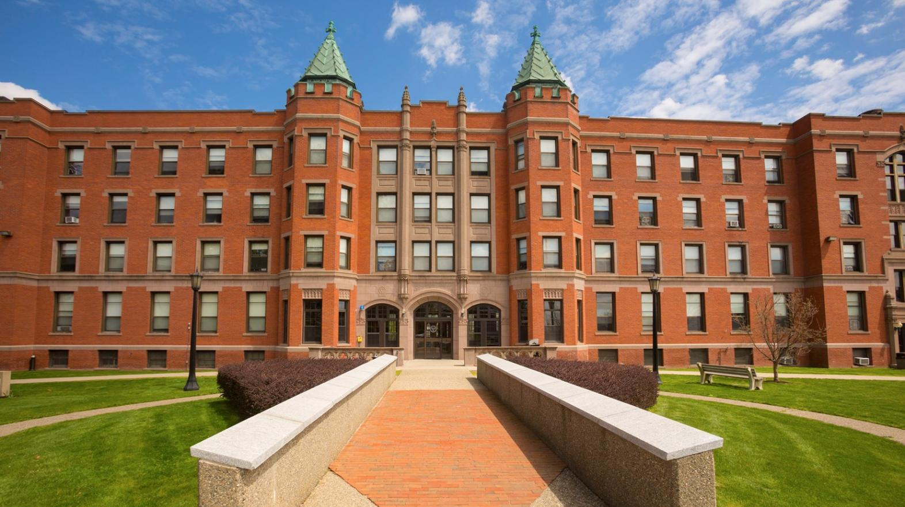
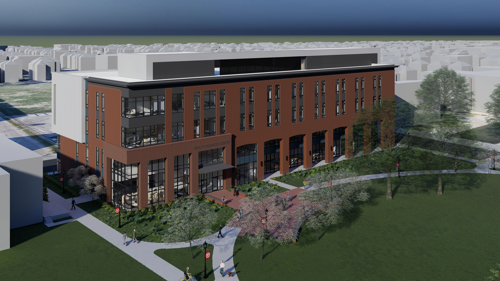
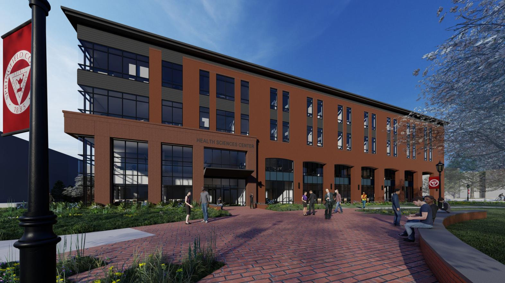

Nuestra Historia
Todo comenzó en 1907 en la zona más tradicional del barrio de Belgrano, una vieja residencia transforma totalmente su interior para comenzar a albergar, desde 1991, a una nueva escuela secundaria. Tres años más tarde llegarían las sedes de Primaria y luego la de inicial, para completar un proyecto educativo de primer nivel, que se propone como objetivo fundamental:Educar integralmente a niños y jóvenes, en un clima de cordialidad, respeto y responsabilidad, privilegiando los valores y la excelencia académica, para que crezcan y se desarrollen en libertad, logrando asumir de manera creativa, eficaz, autónoma y trascendente el tiempo que les toca vivir. Hoy Romeo College, recibe niños y jóvenes de ambos sexos, a partir del primer año de vida, para lo cual ha instrumentado proyectos y condiciones adecuadas a los distintos estadíos evolutivos y madurativos.
Cierre en 2003
En en año 2003 la institución cerró porque no podian continuar en donde estaba el edificio.El Colegio actualmente está funcionando en un antiguo casco de estancia bautizada en su momento como "Paradise Grove" por su propietario Henry Applin Green. En 1840 ya estaban en pie las primeras construcciones (la Cafetería y el Stock de Uniformes). Fue en su origen una estancia o chacra, que al subdividirse adquirió su escala actual. La construcción nueva (entre los bow windows) neorrenacentista de vertiente inglesa data de 1870; como en 1871 Charles Ryeder y Edwin Merry levantaron en terrenos donados por Green la iglesia anglicana, ello podría sugerir su autoría de la obra. Luego sería adquirida por Francisco Meeks, yerno Henry Applin Green y posteriormente por John Edward Vibart en 1938.
Los 100 años del Romeo College
En 2007 conmemorando los 100 años se inaugura el Centennial Hall (un S.U.M. de más de 600 m2). En 2017 conmemorando los 110 años se inauguró la Sala de Uno de Kindergarten. Durante este período, se realizaron doce giras internacionales y se recibieron numerosos Colegios de Inglaterra, Sudáfrica, Australia y Nueva Zelanda. Desde 2018 la Dirección General está a cargo de John G. Vibart, Christian Paul Vibart y Marianne Vibart (de izquierda a derecha en la foto). Los siguientes directores continúan trabajando para mantener el Colegio en la vanguardia de las filosofías e innovaciones actuales.